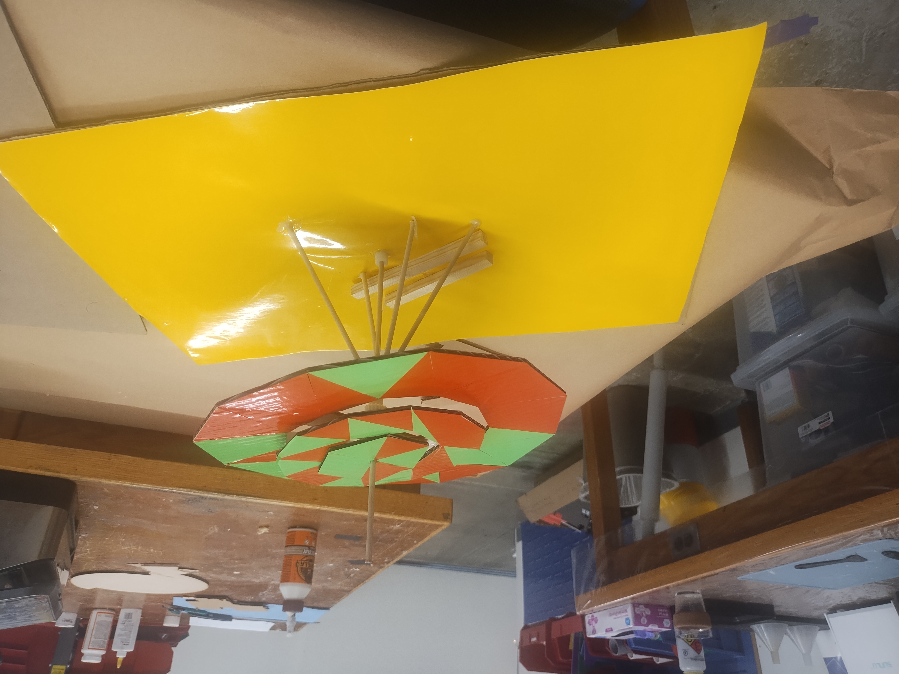
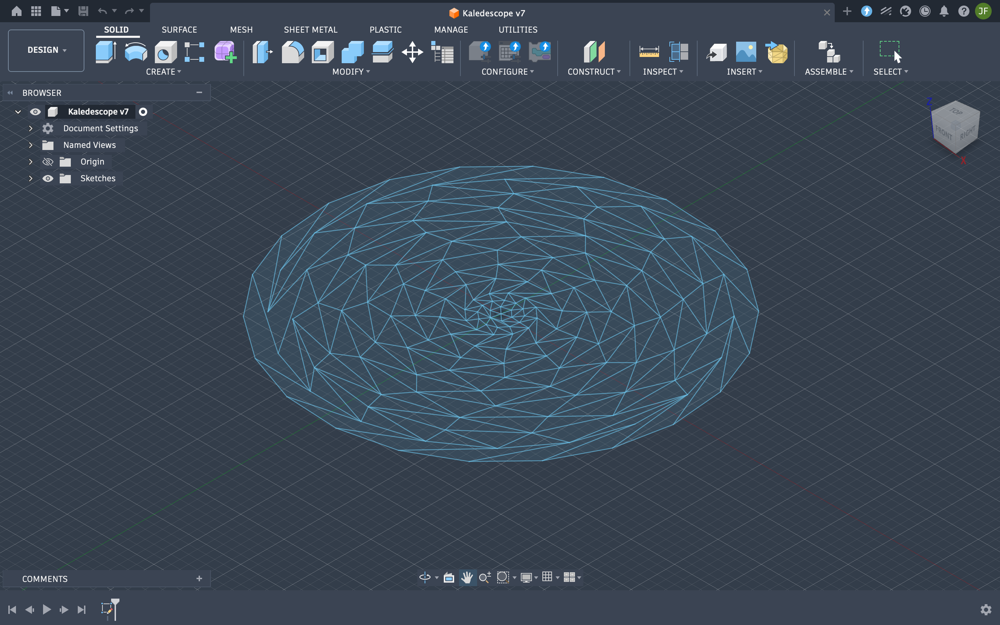
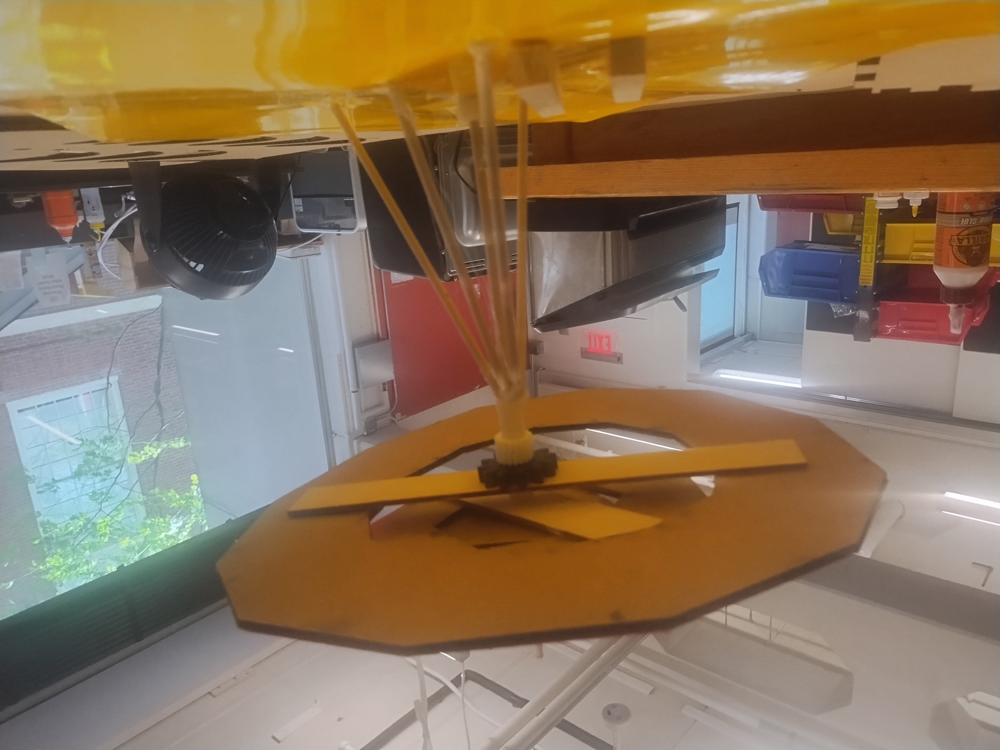
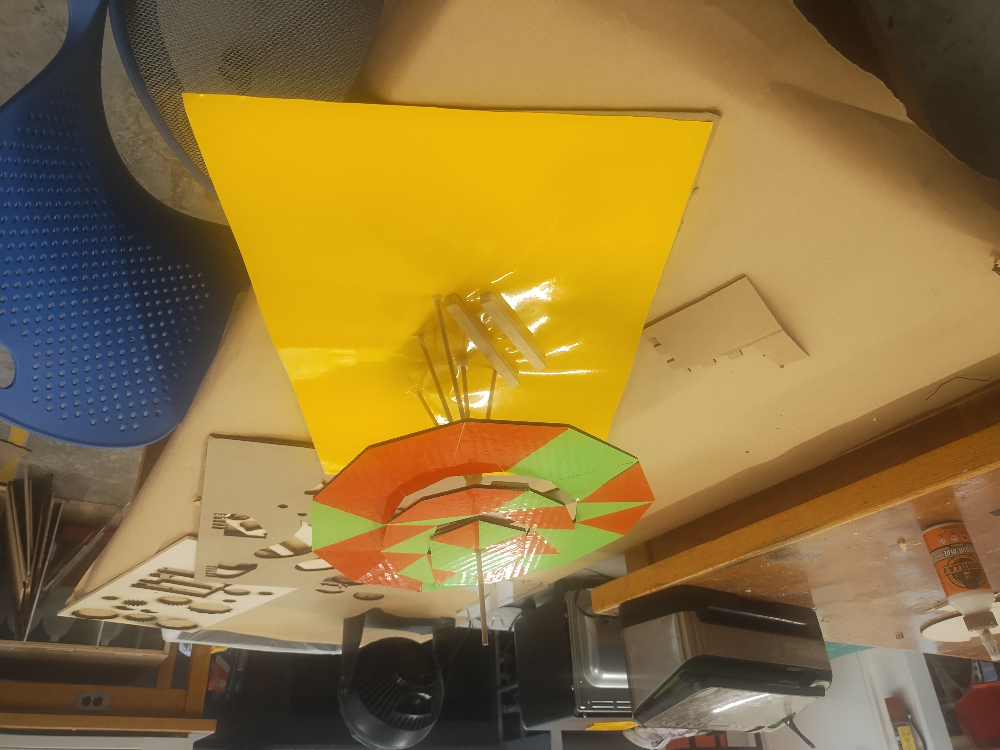

On this page
Week Assignment • Kinematic Structure
Inverse Rotating Kaleidoscope
For this assignment I had to use gears, Fusion skills and laser-cutting skills I had already learned to create a kinematic structure. Instead of making a simple mechanism, I wanted to experiment with a more ambitious idea. An inverse rotating kaleidoscope made from polygonal parts that would rotate around a shared center. The final build did not fully work, but the project taught me a lot about motion transfer, gear dependencies, and the difference between a design that looks good and one that actually works physically

Final assembled structure. My goal was to create a gear driven kaleidoscope mechanism with polygonal sections rotating around the center
The Brief
Assignment Description
The goal of this assignment was to design and fabricate a kinematic structure using gears while applying the digital fabrication skills I had already developed in class. That meant using Fusion to design a mechanism, preparing the design for laser cutting and assembling a structure that could transfer motion through multiple connected parts
I wanted to use the assignment as a chance to go beyond a basic gear train and build something that was both mechanical and visual. My idea was an inverse rotating kaleidoscope. a circular structure made from polygonal sections of different sizes that would all meet at the center and rotate. The intended result was a shifting and mesmerizing geometric pattern driven by a gear system underneath
This project combined three things I had been learning:
- Designing parts and assemblies in Fusion
- Preparing cut-ready geometry for laser cutting
- Using gears to create controlled motion in a kinematic structure

Early Fusion layout showing the circular arrangement of the mechanism and how the structure was intended to rotate around a central point
Design Process
My Attempt
My goal was to create a gear-driven structure where multiple polygonal segments would rotate around the same center point and create a mechanical kaleidoscope effect. Rather than using circular decorative pieces, I wanted the visible moving parts to be made from different polygonal shapes so the motion would feel more geometric and visually intriguing
Concept + Geometry
I started by looking for inspiration concerning the final structure. The main idea was to have multiple polygonal pieces meet at the center which would have been separated into different layers but there were a couple problems

The initial geometric concept for the rotating kaleidoscope pattern
Fusion Modeling
After laying out the visual structure, I actually decided to start the development of the idea in fusion and similarly started with a hexagon at the center of the entire peice with 10 more layers of interconnecting triangles demarcated by the polygonal line for the 12 through 20 sides polygons that made up the Kaleidoscope
The Fusion Sketch
Laser Cutting
Once I was done with the sketch I had to export it as a .dxf file for laser cutting and the first problem arose here.
Final .dxf file for the project
Assembly + Testing
After resolving the export problem which took a very long time I finally got to laser cutting and vinyl cutting to create that strong visual intrigue. Then I put the vinyl unto the cut and scored cardboard and then I realized I had a serious problem with no explicit direction to proceed in the project stalled

The physical assembly during testing before I discovered the final failure point
What Went Wrong
My Failures & Mishaps
The mechanism did not fully work because the final gear stage failed. The entire structure depended on that last gear transferring motion to the final rotating piece and I was not able to make that stage work reliably enough to complete the inverse rotating effect
The Final Gear Never Fully Worked
The most important failure was the last gear in the motion transfer between the motor and the completed structure. It was supposed to drive the final moving section, but it never transferred motion consistently enough for the whole kaleidoscope to function as intended.
The Mechanism Was Too Dependent on One Stage
Because the inverse effect relied heavily on the final output stage, the entire structure had a single weak point. Once that stage failed, the visual result I was aiming for could not happen.
Out Of Time
I had sarted working on making the physical project 8 hours before it was due bu had started the entire thing the night before working all night on it and coming up wiht different ideas. When it finally came to exporting to .dxf format, the file fusion 360 repeatedly kept on crashing on my computer. Hence, I had to go back to the sketch after repeated force quits and shutdowns and remove a lot of the geometry and then scale it up and that took a while. It would have been easier if I had done it parametrically but I do not think there was a way to do so. This entire process of just trying to get it to laser cut took up a full hour of vital project time
No Vision
Since I had done a lot of the work just focusing on the fact that it needs to rotate and it needs to be mesmerizing when it came time to actually create the presentation mode for the system I had no idea what to do and instead of taking a step back to analyze, I let the time pressure get to me and eventually ended up putting some stuff together. Failing to consider other things in the process such as how the motor would get to where the gear was. There problems eventually cascaded to create the final problem that ruined the project.
The Main Problem
Looking back, the biggest issue was that I tried to solve the visual design and the full motion system at the same time. I was focused on making the kaleidoscope look interesting, but I should have proven the gear train first before building the full structure around it.
Close-up of the final gear stage that prevented the full inverse rotation from working.
Takeaways
My Reflection
Even though the final mechanism failed, I still learned a lot from this project. More than anything, it showed me the difference between a design that looks convincing in idealogically and one that actually works as a fabricated kinematic structure. It forced me to think more carefully about how motion is transferred from one component to another and how quickly a mechanism can break down when multiple stages depend on each other.
One of the biggest lessons from this assignment was that I should have prototyped the gear train more independently before integrating it into the full kaleidoscope. If I were to redo the project, I would first build a simplified mechanism focused only on the gear train and the final output motion. Once that worked reliably, I would then rebuild the kaleidoscope structure around it.
I also learned that ambitious fabrication ideas do not fail because the concept itself is bad. they usually fail because the mechanical details matter just as much as the visual ones. Although I did not succeed in making the inverse rotating kaleidoscope fully functional, I pushed myself beyond a simple assignment and learned a lot about designing, fabricating, and troubleshooting a more complex kinematic structure.
Documentation
Project Gallery
